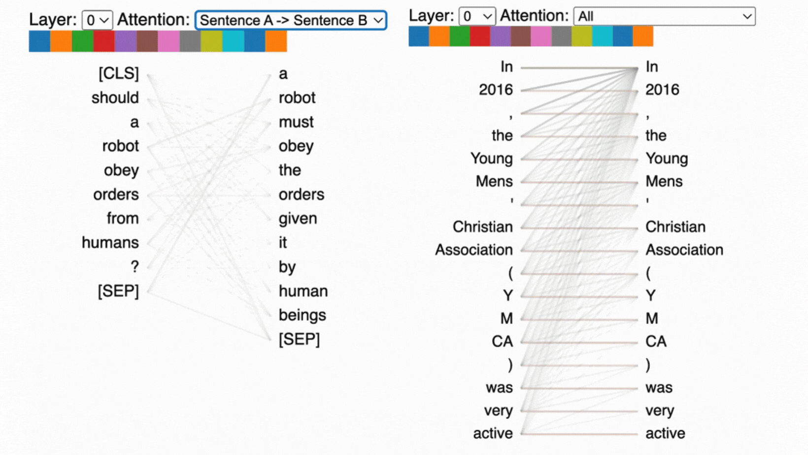
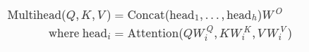

if you had thought this blog was supposed to give you the attention that you didn't receive as a child, then im afraid you're in the wrong place :D but, i do want to talk about attention, just under a different context. the attention mechanism from the paper "Attention Is All You Need" is probably the most important and critical deep learning paper to date. models like GPT-4, BERT, etc. use some variation of the initial self-attention that was initially used.
attention, in the context of deep learning, mainly states that by finding out how
relevant some parts of the data are, compared to the parts that are not so relevant,
we are able to improve the performance of a model by focusing on the relevant information alone.
for example, you can take a look at this visualization here. now warning, this might look complicated
but i will try to explain it as low-level as possible.

for each word in a sentence, say "I ate an apple.", we are calculating how each word interacts
with the other words in the sentence, calculating an "attention score" for each interaction.
the mathematics behind the attention mechanism is astoundingly simple, yet almost mindblowing, but first we have to understand few words like, "query", "key", "value"

mainly, two different categories exist: self-attention and cross-attention.
self-attention is when, the matrices Q, K and V are identical. so the attention mechanism
is basically interaction over itself whereas cross-attention, is when at least one of the matrices are different.
here we will talk about multi-head attention, which sounds complicated but really it just means there are many different
sets of query, key and vaue matrices and we are computing the attention for each set and concatenating
the result in the end. the equation will change ever so slightly here:

there are other variations of the attention mechanism as well but the most common one used is
mult-head attention.
it's very simple. this code that i will be showing is from my repository: from-scratch.
only numpy was used for understanding purposes, for self-attention, one can code it like so:
import numpy as np
class SelfAttention:
"""
This class implements the self-attention mechanism for a single head.
Args:
input_matrix (ndarray): The input matrix of shape (d_model, seq_length).
seq_length (int, optional): The sequence length. Defaults to 6.
d_model (int, optional): The dimensionality of the model. Defaults to 512.
Attributes:
seq_length (int): The sequence length.
d_model (int): The dimensionality of the model.
input_matrix (ndarray): The input matrix of shape (d_model, seq_length).
Methods:
forward(): Performs the forward pass of the self-attention mechanism.
Returns:
ndarray: The output tensor of shape (d_model, seq_length).
"""
def __init__(self, input_matrix: np.ndarray, seq_length: int = 6, d_model: int = 512):
self.seq_length = seq_length
self.d_model = d_model
self.input_matrix = input_matrix
def forward(self):
matrix = np.random.rand(self.d_model, self.seq_length)
query, key, value = matrix, matrix, matrix
sf = self.d_model**2
num = np.dot(query, key.T)
denom = (1 / np.sqrt(self.d_model)) * num
output = (1/sf) * denom
prob_num = np.exp(output - np.max(output, axis=-1, keepdims=True))
prob_denom = prob_num.sum(axis=-1, keepdims=True)
final = (prob_num / prob_denom)
out = sf * np.dot(final, value)
return out
you can take a look at my other code in the repository linked above.